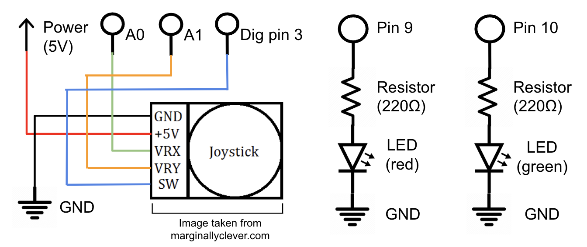

Assignment 3: Input Output!
Overview
First, I created a schematic (below) for a joystick that will be read
to activate 2 different LEDs at different levels of brightness depending on
the x and y values the joystick is moved to. These are all independent from
each other. I used this to implement the circuit on my breadboard connected
to my Arduino. Then, I wrote firmware in an .ino file to connect the joystick
and LEDs together using analogRead, analogWrite, map, and more. I created a
scenario where if you moved the joystick left or right, that determines the LED
that gets affected by wherever the joystick is moved up or down, which affects
brightness/dimness of that particular LED.

Schematic for a joystick and 2 LEDs
Resistance and Voltage Divider Calculations
I used red and green LEDs that each have a 1.8V drop.
5V - 1.8V = 0.02A * R
3.2V = 0.02A * R
R = 3.2V / 0.02A
R = 160Ω
This means that each LED requires a resistance of at least 160Ω.
Therefore, I used a 220Ω resistor for each light, as that is the
closest value over 160.
For the joystick, I did not use a resistor because it has internal
potentiometers which are standardly 10kΩ each. 10kΩ allows for a good,
reliable balance between sensitivity and accuracy for most joystick
applications. This allows for a wide range of voltage output with control.
The two potentiometers in the joystick essentially act as voltage dividers,
eliminating the need for any external ones. They each divide the total supply
voltage (5V) by a fraction that changes depending on the joystick's position,
sending that output to x and y. We use analogRead() for the two analog input
pins associated with x and y to obtain the values that correspond with those
positions.
The values we might read at the voltage divider would range between 0V (analog
reading = 0) and 5V (analog reading = 1023). At neutral position, it would read
around 2.5V and the analog reading = 512. To calculate the voltage at any time,
we would use Vout = Vin * [R1
⁄ (R1 + R2)].
For example, we know each potentiometer is 10kΩ, so at neutral position, R1
= 5000Ω and R2 = 5000Ω. Therefore, the voltage out at this time would be 5V
* [5000Ω ⁄ (5000Ω + 5000Ω)] = 5V
* [5000Ω ⁄ (10000Ω)] = 5V * 0.5
= 2.5V.
Building the Circuit
I brought the schematic to life, connecting my LEDs to pin 9 and 10. The joystick
is on its own. It grabs power from 5V and connects to ground. VRx and VRy read from
analog pins A0 and A1. Lastly, SW on the joystick is the switch, which functions by
outputting a digital signal if the joystick is moved. This is connected to digital
pin 3.

Circuit of a joystick and 2 LEDs
Coding the Firmware
Then, I coded the firmware in an .ino file to implement a scenario where the
joystick's x-axis determines which of the two LEDs will be activated while the
y-axis determines the brightness/dimness of the respective LED. On the x-axis,
Left side means red LED while right side is green; on the y-axis, up means dim,
down is bright. For example, if I were to move the joystick to the top left, the
red light would be at its dimmest (and also the green would be at neutral
brightness), and if I were to move the joystick to the bottom right, the green
light would be at its brightest (while red is at neutral brightness). Note: if y
is at neutral position (has not been moved up or down), the LED would be at neutral
brightness. Full code is below.
const int analogOutPin9 = 9; // analog output pin the red LED is attached to
const int analogOutPin10 = 10; // analog output pin the green LED is attached to
const int x = A0; // analog input pin to read the x value from the joystick
const int y = A1; // analog input pin to read the y value from the joystick
int xval = 0; // initializing xval
int yval = 0; // initializing yval
int outputYValue = 0; // initializing outputYValue
void setup() {
Serial.begin(9600); // initialize serial communications at 9600 bps:
}
void loop() {
xval = analogRead(x); // reading the analog from joystick for x value
yval = analogRead(y); // reading the analog from joystick for y value
outputYValue = map(yval, 0, 1023, 0, 255); // mapping y value for output 0-255
// xval determines which pin (LED) is being affected, yval determines the voltage allocated to that LED (brightness/dimness)
if (xval < 512) { // if joystick is moved from neutral to left (up to where x = 0), pin 9 is the output
analogWrite(analogOutPin9, outputYValue); // changing analog out y value for pin 9
} else if (xval > 512) { // if joystick is moved from neutral to right (up to where x = 255), pin 10 is the output
analogWrite(analogOutPin10, outputYValue); // changing analog out y value for pin 10
}
// else both LEDs stay on at neutral y value brightness
// checking what x and y read from the joystick on the serial monitor, this helped me check my scenario was working
Serial.print("x = ");
Serial.println(outputXValue);
Serial.print("y = ");
Serial.println(outputYValue);
}
Here is the final output operation!

Additional Questions
1. In your voltage divider, can the variable resistor be either R1 or R2
or does it need to be one or the other? Justify your answer with example
calculations.
The variable resistor (or the potentiometers in my joystick in this case) can
be either R1 or R2, it doesn't matter. However, they will
differ in the range of voltage it can output as resistance changes.
Let's say it was R2 first. My equation is: Vout = Vin
* [R1 ⁄ (R1 + R
2)]. So R2 can vary from 0 to 10kΩ,
while R1 stays fixed at 10kΩ. If R2 = 0Ω, then Vout
= 5V * [10000Ω ⁄ 10000Ω + 0]
= 5V * 1 = 5V. If R2 = 10000Ω, then Vout = 5V * [
10000Ω ⁄ 10000Ω + 10000Ω] = 5V * 0.5 =
2.5V.
Now let's say it was R1. So R1 can vary from 0 to 10kΩ,
while R2 stays fixed at 10kΩ. If R1 = 0Ω, then Vout
= 5V * [0 ⁄ 0 + 10000Ω]
= 5V * 0 = 0V. If R1 = 10000Ω, then Vout = 5V * [
10000Ω ⁄ 10000Ω + 10000Ω] = 5V * 0.5 =
2.5V.
R1's voltage output ranges from 0 to 2.5V while for R2, the voltage
output ranges from 2.5V to 5V. Together, they combine for the full range of 0 to 5V.
Either one is valid; what matters is whether we want the output to default to 0V
or 5V (or in between) when the variable resistor is at a particular end.
2. Draw a graph where the x-axis is time and the y-axis is voltage. Plot the
voltage at V-measure of your voltage divider of your shared gif.
This graph shows the change in voltage for the red and green LEDs corresponding
to my gif where I first manipulate the joystick to the left, then up and down to
make the red LED go from neutral, to dim then bright. Then I move the joystick to
the right, then up and down to make the green LED go from neutral, to dim then bright
(and back to neutral).
3. AnalogWrite and analogRead are respectively 8-bit and 10-bit values.
Imagine you had 10-bit PWM and a 16-bit analog-to-digital converter instead.
How would this change your map() code? Explain your answer.
If we had a 10-bit PWM means we would then expect values between 0 to 1023, instead
of the normal 255, because now we can get values up to 210 = 1023.
Therefore, the code would be "outputYValue = map(yval, 0, 1023, 0, 1023);".
If we had a 16-bit analog-to-digital convertor instead, we can now read ADC values up
to 216 = 65535. The code would then be "outputYValue = map(yval, 0, 65535,
0, 255);" as we're compressing that large amount of ADC values to 0-255.